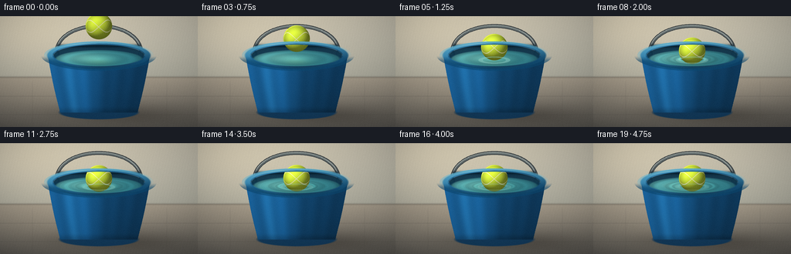
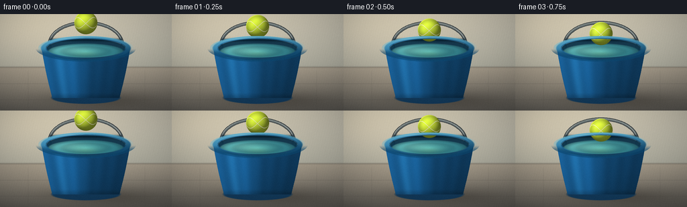
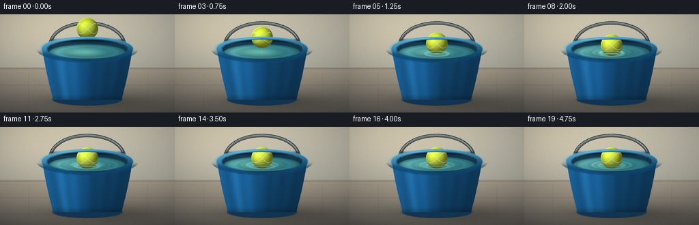
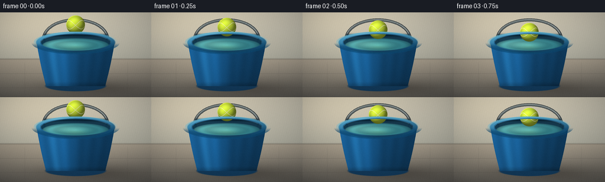

CODING AGENTS AS PIXEL WORLD MODELS
traex/DeepSeek-V4.1-Flash · phygen_008
点击播放 · 原生 RGB 像素
逐轮保存的候选
回放视频、检查图与代码变化。
每份候选均可单独播放。实际图片检查记录在下方工具轨迹中。
候选 01播放与检查图
点击播放 · 原生 RGB 像素


展开代码变化
--- 上一保存版本
+++ 本次保存版本
@@ -0,0 +1,441 @@
+from __future__ import annotations
+
+from pathlib import Path
+
+import numpy as np
+from PIL import Image, ImageDraw, ImageFilter
+
+import artifact_io
+
+
+W, H = 256, 144
+N, FPS = 20, 4.0
+S = 4
+WS, HS = W * S, H * S
+CASE_DIR = Path(__file__).resolve().parent
+
+
+def smoothstep(edge0: float, edge1: float, value: np.ndarray) -> np.ndarray:
+ t = np.clip((value - edge0) / (edge1 - edge0), 0.0, 1.0)
+ return t * t * (3.0 - 2.0 * t)
+
+
+def blend(image: np.ndarray, color, alpha: np.ndarray) -> None:
+ a = np.clip(alpha, 0.0, 1.0)[..., None]
+ image[:] = image * (1.0 - a) + np.asarray(color, dtype=np.float32) * a
+
+
+def ellipse_alpha(cx, cy, rx, ry, soft=0.8):
+ q = np.sqrt(((X - cx) / rx) ** 2 + ((Y - cy) / ry) ** 2)
+ edge = soft / min(rx, ry)
+ return np.clip((1.0 - q) / edge + 0.5, 0.0, 1.0)
+
+
+def ellipse_ring(cx, cy, rx, ry, width, soft=0.65):
+ q = np.sqrt(((X - cx) / rx) ** 2 + ((Y - cy) / ry) ** 2)
+ edge = soft / min(rx, ry)
+ return np.clip((1.0 - np.abs(q - 1.0) / (width / min(rx, ry))) / edge + 0.5, 0.0, 1.0)
+
+
+def polygon_mask(points):
+ image = Image.new("L", (WS, HS), 0)
+ draw = ImageDraw.Draw(image)
+ draw.polygon([(int(x * S), int(y * S)) for x, y in points], fill=255)
+ return np.asarray(image, dtype=np.float32) / 255.0
+
+
+def line_mask(points, width, fill=255):
+ image = Image.new("L", (WS, HS), 0)
+ draw = ImageDraw.Draw(image)
+ draw.line([(int(x * S), int(y * S)) for x, y in points], fill=fill, width=max(1, int(width * S)), joint="curve")
+ return np.asarray(image, dtype=np.float32) / 255.0
+
+
+def gaussian_2d(cx, cy, sx, sy):
+ return np.exp(-0.5 * (((X - cx) / sx) ** 2 + ((Y - cy) / sy) ** 2))
+
+
+def make_background() -> np.ndarray:
+ image = np.zeros((HS, WS, 3), dtype=np.float32)
+
+ wall_t = np.clip(Y / 82.0, 0.0, 1.0)
+ wall_top = np.array([210, 204, 188], dtype=np.float32)
+ wall_bottom = np.array([168, 166, 154], dtype=np.float32)
+ wall = wall_top[None, None, :] * (1.0 - wall_t[..., None]) + wall_bottom[None, None, :] * wall_t[..., None]
+
+ sun = 18.0 * gaussian_2d(26, 17, 72, 54) + 7.0 * gaussian_2d(110, 8, 90, 42)
+ wall += sun[..., None] * np.array([1.0, 0.82, 0.58], dtype=np.float32)[None, None, :]
+
+ texture = (
+ 1.4 * np.sin(1.7 * X + 0.4 * Y)
+ + 0.9 * np.sin(4.3 * X - 2.1 * Y)
+ + 0.5 * np.sin(11.0 * X + 7.0 * Y)
+ )
+ wall += texture[..., None] * np.array([0.7, 0.7, 0.65], dtype=np.float32)
+
+ image[:] = wall
+
+ floor_t = np.clip((Y - 79.0) / 70.0, 0.0, 1.0)
+ floor_top = np.array([164, 153, 137], dtype=np.float32)
+ floor_bottom = np.array([91, 87, 81], dtype=np.float32)
+ floor = floor_top[None, None, :] * (1.0 - floor_t[..., None]) + floor_bottom[None, None, :] * floor_t[..., None]
+ floor += (9.0 * gaussian_2d(73, 109, 70, 27))[..., None] * np.array([1.0, 0.86, 0.63], dtype=np.float32)
+ floor += (0.9 * texture)[..., None] * np.array([0.65, 0.62, 0.58], dtype=np.float32)
+ floor_mask = smoothstep(78.4, 79.6, Y)
+ blend(image, floor, floor_mask)
+
+ # Patio seams sit behind the bucket and give the floor a readable scale.
+ seam_color = np.array([78, 73, 67], dtype=np.float32)
+ for sy, strength in ((104.0, 0.20), (128.0, 0.16)):
+ seam = np.exp(-((Y - sy) / 0.42) ** 2) * smoothstep(82.0, 88.0, Y)
+ blend(image, seam_color, seam * strength)
+ for sx, strength in ((42.0, 0.12), (216.0, 0.12)):
+ seam = np.exp(-((X - sx) / 0.48) ** 2) * smoothstep(82.0, 89.0, Y)
+ blend(image, seam_color, seam * strength)
+
+ base_shadow = np.exp(-((Y - 79.2) / 1.25) ** 2)
+ blend(image, np.array([95, 89, 79], dtype=np.float32), base_shadow * 0.35)
+ return image
+
+
+def add_bucket_shadow(image: np.ndarray) -> None:
+ floor_mask = smoothstep(84.0, 90.0, Y)
+ shadow = (
+ 0.28 * gaussian_2d(154, 126, 57, 11)
+ + 0.14 * gaussian_2d(184, 132, 48, 8)
+ + 0.14 * gaussian_2d(123, 127, 45, 6)
+ ) * floor_mask
+ blend(image, np.array([53, 48, 42], dtype=np.float32), shadow)
+
+
+def add_handle(image: np.ndarray) -> None:
+ # A gently curved galvanized handle sits behind the bucket and ball.
+ pts = []
+ for i in range(121):
+ t = i / 120.0
+ x = (1 - t) ** 3 * 73 + 3 * (1 - t) ** 2 * t * 73 + 3 * (1 - t) * t**2 * 183 + t**3 * 183
+ y = (1 - t) ** 3 * 49 + 3 * (1 - t) ** 2 * t * 0.5 + 3 * (1 - t) * t**2 * 0.5 + t**3 * 49
+ pts.append((x, y))
+
+ dark = line_mask(pts, 5.0)
+ blend(image, np.array([48, 54, 57], dtype=np.float32), dark * 0.90)
+ metal = line_mask(pts, 3.0)
+ metal_t = np.clip((Y - 2.0) / 48.0, 0.0, 1.0)
+ metal_color = np.array([132, 143, 142], dtype=np.float32) * (1.0 - metal_t[..., None]) + np.array(
+ [78, 86, 88], dtype=np.float32
+ ) * metal_t[..., None]
+ blend(image, metal_color, metal * 0.92)
+ shine = line_mask([(x - 0.5, y - 0.7) for x, y in pts], 0.8)
+ blend(image, np.array([218, 224, 218], dtype=np.float32), shine * 0.65)
+
+ for cx in (73.0, 183.0):
+ disc = ellipse_alpha(cx, 49.0, 4.2, 4.2, soft=0.55)
+ blend(image, np.array([44, 52, 55], dtype=np.float32), disc * 0.9)
+ inner = ellipse_alpha(cx - 0.7, 48.4, 2.5, 2.5, soft=0.45)
+ blend(image, np.array([151, 162, 159], dtype=np.float32), inner * 0.8)
+
+
+def add_bucket_body(image: np.ndarray) -> None:
+ y_top, y_bottom = 51.0, 125.0
+ left, right = [], []
+ for i in range(101):
+ t = i / 100.0
+ y = y_top + (y_bottom - y_top) * t
+ half = 66.0 - 16.0 * t + 1.0 * np.sin(np.pi * t)
+ left.append((128.0 - half, y))
+ right.append((128.0 + half, y))
+ body_points = left + right[::-1]
+ body = polygon_mask(body_points)
+
+ base = ellipse_alpha(128.0, 125.0, 51.0, 9.0, soft=0.8)
+ blend(image, np.array([16, 57, 90], dtype=np.float32), base * 0.95)
+
+ t = np.clip((Y - y_top) / (y_bottom - y_top), 0.0, 1.0)
+ half = 66.0 - 16.0 * t + 1.0 * np.sin(np.pi * t)
+ xn = (X - 128.0) / np.maximum(half, 1.0)
+
+ light = (
+ 0.68
+ + 0.28 * np.clip(-xn, 0.0, 1.0)
+ + 0.19 * np.exp(-((xn + 0.34) / 0.32) ** 2)
+ - 0.12 * np.clip(xn, 0.0, 1.0)
+ - 0.08 * t
+ )
+ base_color = np.array([28, 103, 161], dtype=np.float32)
+ blue = base_color[None, None, :] * light[..., None]
+ blue += (20.0 * np.exp(-((xn + 0.62) / 0.12) ** 2))[..., None] * np.array(
+ [0.36, 0.82, 1.0], dtype=np.float32
+ )
+
+ # Subtle molded ribs catch the left-side sunlight.
+ rib = 0.045 * np.cos(6.2 * np.pi * xn) * (1.0 - 0.45 * t)
+ blue *= (1.0 + rib)[..., None]
+ top_shadow = np.exp(-((Y - 53.5) / 3.4) ** 2)
+ blue *= (1.0 - 0.26 * top_shadow)[..., None]
+ bottom_ao = smoothstep(116.0, 126.0, Y)
+ blue *= (1.0 - 0.18 * bottom_ao)[..., None]
+
+ blend(image, blue, body)
+ rim_side = np.exp(-((Y - 51.0) / 1.2) ** 2) * body
+ blend(image, np.array([72, 156, 199], dtype=np.float32), rim_side * 0.55)
+
+
+def add_bucket_interior(image: np.ndarray) -> None:
+ # Interior wall, still visible above the waterline.
+ inner = ellipse_alpha(128.0, 51.0, 59.0, 14.0, soft=0.7)
+ interior_t = np.clip((Y - 37.0) / 31.0, 0.0, 1.0)
+ interior = np.array([12, 45, 66], dtype=np.float32) * (1.0 - interior_t[..., None]) + np.array(
+ [18, 66, 88], dtype=np.float32
+ ) * interior_t[..., None]
+ interior += (10.0 * np.exp(-((X - 105.0) / 25.0) ** 2))[..., None] * np.array(
+ [0.2, 0.65, 0.72], dtype=np.float32
+ )
+ blend(image, interior, inner * 0.95)
+
+ # Dark inner shadow immediately under the rear lip.
+ rear_shadow = np.exp(-((Y - 38.8) / 2.2) ** 2) * (np.abs(X - 128.0) < 54.0)
+ blend(image, np.array([5, 28, 42], dtype=np.float32), rear_shadow * 0.75)
+
+
+def water_layers(frame: int):
+ cx, cy, rx, ry = 128.0, 56.0, 56.2, 12.0
+ water = ellipse_alpha(cx, cy, rx, ry, soft=0.7)
+ dx = X - cx
+ dy = Y - cy
+ q = np.sqrt((dx / rx) ** 2 + (dy / ry) ** 2)
+
+ upper_light = np.exp(-0.5 * (((dx + 17.0) / 30.0) ** 2 + ((dy + 2.0) / 5.5) ** 2))
+ wall_reflection = np.exp(-0.5 * ((q - 0.78) / 0.10) ** 2) * (0.5 + 0.5 * np.clip(-dx / rx, 0.0, 1.0))
+ base = np.array([50, 143, 156], dtype=np.float32)[None, None, :] * (
+ 1.0 - 0.55 * np.clip(q, 0.0, 1.0)[..., None]
+ )
+ base += np.array([20, 44, 45], dtype=np.float32) * wall_reflection[..., None]
+ base += np.array([54, 55, 41], dtype=np.float32) * upper_light[..., None]
+ base += np.array([12, 26, 32], dtype=np.float32) * np.clip(q, 0.0, 1.0)[..., None] ** 2
+
+ time_since_impact = max(0.0, (frame - 5) / FPS)
+ active = smoothstep(0.0, 0.16, time_since_impact) * np.exp(-0.16 * time_since_impact)
+ phase1 = 2.0 * np.pi * (q / 0.165 - 2.25 * time_since_impact)
+ phase2 = 2.0 * np.pi * (q / 0.092 - 2.95 * time_since_impact + 0.19)
+ envelope = np.exp(-1.55 * q)
+ wave1 = np.sin(phase1) * envelope * active
+ wave2 = np.sin(phase2) * np.exp(-2.15 * q) * active
+ ripple_shade = 1.0 + 0.105 * wave1 + 0.052 * wave2
+
+ # The central depression under the floating ball produces a compact ring.
+ dimple_q = 0.24 + 0.075 * time_since_impact
+ dimple = np.exp(-((q - dimple_q) / 0.035) ** 2) * active
+ base *= ripple_shade[..., None]
+ base += dimple[..., None] * np.array([19, 39, 37], dtype=np.float32)
+
+ crest = np.clip(np.cos(phase1), 0.0, 1.0) ** 8 * np.exp(-1.9 * q) * active
+ crest += 0.65 * np.clip(np.cos(phase2), 0.0, 1.0) ** 10 * np.exp(-2.4 * q) * active
+ directional = 0.35 + 0.65 * np.clip(-(dx / rx) - 0.35 * (dy / ry), 0.0, 1.0)
+ highlight = crest * directional * 0.22
+ base += highlight[..., None] * np.array([185, 226, 216], dtype=np.float32)
+
+ # Soft reflection of the yellow ball, broken up by the moving surface.
+ ball_y = ball_center(frame)
+ reflect = gaussian_2d(cx, cy + 3.2, 13.0, 3.2) * water * 0.18
+ reflect *= 0.72 + 0.28 * np.sin(17.0 * (X - cx) + 0.9 * frame)
+ base = base * (1.0 - reflect[..., None]) + np.array([169, 176, 66], dtype=np.float32) * reflect[..., None]
+
+ contact_shadow = gaussian_2d(cx + 7.0, cy + 2.0, 16.0, 3.2) * active
+ base *= (1.0 - 0.12 * contact_shadow)[..., None]
+ return water, base, (cx, cy, rx, ry), time_since_impact
+
+
+def ball_center(frame: int) -> float:
+ centers = [
+ 13.0,
+ 18.4,
+ 23.8,
+ 29.2,
+ 34.6,
+ 40.2,
+ 44.7,
+ 46.7,
+ 44.9,
+ 46.3,
+ 45.1,
+ 45.8,
+ 45.3,
+ 45.6,
+ 45.4,
+ 45.5,
+ 45.45,
+ 45.5,
+ 45.48,
+ 45.5,
+ ]
+ return centers[frame]
+
+
+def add_ball(image: np.ndarray, frame: int) -> tuple[np.ndarray, np.ndarray]:
+ cx, cy, r = 128.0, ball_center(frame), 17.2
+ dx = X - cx
+ dy = Y - cy
+ rr = np.sqrt(dx * dx + dy * dy)
+ alpha = np.clip((r - rr) * S + 0.5, 0.0, 1.0)
+ inside = alpha > 0.0
+ u = np.clip(dx / r, -1.0, 1.0)
+ v = np.clip(dy / r, -1.0, 1.0)
+ z = np.sqrt(np.clip(1.0 - u * u - v * v, 0.0, 1.0))
+
+ light = np.array([-0.48, -0.63, 0.61], dtype=np.float32)
+ light /= np.linalg.norm(light)
+ lambert = np.clip(u * light[0] + v * light[1] + z * light[2], 0.0, 1.0)
+ fill = np.clip(u * 0.42 + v * 0.22 + z * 0.88, 0.0, 1.0)
+
+ base = np.array([204, 222, 61], dtype=np.float32)
+ color = base[None, None, :] * (0.52 + 0.72 * lambert[..., None])
+ color += np.array([39, 48, 7], dtype=np.float32) * (0.25 * fill[..., None])
+ color *= (1.0 - 0.16 * smoothstep(0.45, 1.0, rr / r))[..., None]
+
+ felt = (
+ 2.8 * np.sin(47.0 * u + 19.0 * v + 8.0 * z)
+ + 1.7 * np.sin(91.0 * u - 33.0 * v + 5.0 * z)
+ + 1.1 * np.sin(171.0 * u + 77.0 * v)
+ )
+ color += felt[..., None] * np.array([0.75, 0.86, 0.45], dtype=np.float32)
+
+ phi = np.arctan2(u, np.maximum(z, 0.025))
+ theta = np.arcsin(np.clip(v, -1.0, 1.0))
+ seam_target1 = 0.47 * np.sin(1.95 * phi + 0.16)
+ seam_target2 = -0.49 * np.sin(1.90 * phi - 0.10)
+ seam_width = 0.042
+ seam1 = np.clip((seam_width - np.abs(theta - seam_target1)) / 0.018, 0.0, 1.0)
+ seam2 = np.clip((seam_width - np.abs(theta - seam_target2)) / 0.018, 0.0, 1.0)
+ seam = np.maximum(seam1, seam2) * smoothstep(0.05, 0.22, z)
+ seam_color = np.array([244, 242, 207], dtype=np.float32)[None, None, :] * (0.72 + 0.35 * lambert[..., None])
+ color = color * (1.0 - 0.84 * seam[..., None]) + seam_color * (0.84 * seam[..., None])
+
+ # A faint bright rim on the felt edge keeps the ball from looking like a decal.
+ rim = np.clip((rr - (r - 1.25)) / 0.65, 0.0, 1.0) * (1.0 - smoothstep(r - 0.35, r, rr))
+ rim_light = rim * np.clip(-u * 0.55 - v * 0.6, 0.0, 1.0)
+ color += rim_light[..., None] * np.array([92, 103, 28], dtype=np.float32)
+
+ ball_mask = alpha.copy()
+ blend(image, color, ball_mask)
+ return color, ball_mask
+
+
+def add_waterline(
+ image: np.ndarray,
+ ball_mask: np.ndarray,
+ frame: int,
+ water_data,
+ time_since_impact: float,
+) -> None:
+ if frame < 5:
+ return
+ cxw, cyw, rxw, ryw = water_data
+ dxw = np.clip(X - cxw, -rxw + 0.2, rxw - 0.2)
+ surface_y = cyw + ryw * np.sqrt(np.clip(1.0 - (dxw / rxw) ** 2, 0.0, 1.0))
+
+ below = smoothstep(surface_y - 0.35, surface_y + 1.1, Y)
+ submerged = ball_mask * below
+ water_tint = np.array([27, 93, 105], dtype=np.float32)
+ caustic = 0.5 + 0.5 * np.sin(13.0 * X + 5.0 * Y + 1.8 * frame)
+ blend(image, water_tint + caustic[..., None] * np.array([11, 22, 18], dtype=np.float32), submerged * 0.42)
+
+ line = np.exp(-((Y - surface_y) / 0.62) ** 2) * ball_mask
+ contact_strength = 0.75 * np.exp(-0.28 * time_since_impact)
+ blend(image, np.array([192, 229, 217], dtype=np.float32), line * contact_strength)
+
+ # Small meniscus ring around the floating ball.
+ ring = ellipse_ring(128.0, cyw + 1.1, 17.8 + 0.35 * time_since_impact, 4.0, 0.65, soft=0.5)
+ ring *= np.exp(-0.24 * time_since_impact)
+ blend(image, np.array([147, 209, 201], dtype=np.float32), ring * 0.46)
+
+
+def add_bucket_rim(image: np.ndarray, frame: int) -> None:
+ outer = ellipse_alpha(128.0, 51.0, 67.0, 18.0, soft=0.65)
+ inner = ellipse_alpha(128.0, 51.0, 59.0, 14.0, soft=0.65)
+ ring = np.clip(outer - inner, 0.0, 1.0)
+
+ xn = np.clip((X - 128.0) / 67.0, -1.0, 1.0)
+ yn = np.clip((Y - 51.0) / 18.0, -1.0, 1.0)
+ light = 0.66 + 0.25 * np.clip(-xn, 0.0, 1.0) + 0.18 * np.clip(-yn, 0.0, 1.0)
+ rim_color = np.array([44, 130, 183], dtype=np.float32)[None, None, :] * light[..., None]
+ rim_color += (13.0 * np.exp(-((xn + 0.45) / 0.22) ** 2))[..., None] * np.array(
+ [0.45, 0.88, 1.0], dtype=np.float32
+ )
+ underside = smoothstep(0.20, 1.0, yn)
+ rim_color *= (1.0 - 0.28 * underside)[..., None]
+ blend(image, rim_color, ring)
+
+ top_edge = ellipse_ring(128.0, 50.8, 65.6, 16.8, 1.35, soft=0.5)
+ top_edge *= np.clip(0.28 + 0.72 * (-yn) + 0.18 * (-xn), 0.0, 1.0)
+ blend(image, np.array([112, 192, 219], dtype=np.float32), top_edge * 0.72)
+
+ front_lip = ellipse_ring(128.0, 51.0, 67.0, 18.0, 2.1, soft=0.55) * smoothstep(0.0, 0.45, yn)
+ blend(image, np.array([12, 71, 109], dtype=np.float32), front_lip * 0.58)
+
+ # A bright reflected streak on the left side of the rim.
+ arc = ellipse_ring(128.0, 51.0, 64.8, 15.8, 1.0, soft=0.45)
+ arc *= np.exp(-((X - 103.0) / 26.0) ** 2) * np.clip(-yn, 0.0, 1.0)
+ blend(image, np.array([177, 224, 230], dtype=np.float32), arc * 0.36)
+
+
+def postprocess(image: np.ndarray, frame: int) -> np.ndarray:
+ # Gentle bloom around the brightest sunlit surfaces.
+ bright = np.clip(image - 196.0, 0.0, None)
+ glow = np.asarray(
+ Image.fromarray(np.clip(bright, 0, 255).astype(np.uint8)).filter(ImageFilter.GaussianBlur(2.2 * S)),
+ dtype=np.float32,
+ )
+ image += glow * 0.12
+
+ # Slight vignette and warm highlight / cool shadow grade.
+ nx = (X - W / 2.0) / (W / 2.0)
+ ny = (Y - H / 2.0) / (H / 2.0)
+ vignette = np.clip(1.0 - 0.13 * (nx * nx + ny * ny), 0.0, 1.0)
+ image *= vignette[..., None]
+
+ luma = image.mean(axis=2, keepdims=True) / 255.0
+ warm = np.array([1.015, 1.005, 0.975], dtype=np.float32)
+ cool = np.array([0.965, 0.995, 1.025], dtype=np.float32)
+ grade = cool * (1.0 - luma) + warm * luma
+ image *= grade
+
+ image = np.clip(image, 0.0, 255.0).astype(np.uint8)
+ out = Image.fromarray(image).resize((W, H), Image.Resampling.LANCZOS)
+ arr = np.asarray(out, dtype=np.float32)
+
+ # Fine sensor grain is fixed in world space to avoid frame-to-frame flicker.
+ rng = np.random.default_rng(41)
+ grain = rng.normal(0.0, 0.72, (H, W, 1)).astype(np.float32)
+ arr += grain
+ return np.clip(arr, 0.0, 255.0).astype(np.uint8)
+
+
+def render_frame(frame: int) -> np.ndarray:
+ image = make_background()
+ add_bucket_shadow(image)
+ add_handle(image)
+ add_bucket_body(image)
+ add_bucket_interior(image)
+
+ water_mask, water_color, water_data, time_since_impact = water_layers(frame)
+ blend(image, water_color, water_mask)
+
+ _, ball_mask = add_ball(image, frame)
+ add_waterline(image, ball_mask, frame, water_data, time_since_impact)
+ add_bucket_rim(image, frame)
+ return postprocess(image, frame)
+
+
+def main() -> None:
+ global X, Y
+ ys = (np.arange(HS, dtype=np.float32) + 0.5) / S
+ xs = (np.arange(WS, dtype=np.float32) + 0.5) / S
+ X, Y = np.meshgrid(xs, ys)
+
+ frames = np.stack([render_frame(i) for i in range(N)], axis=0)
+ artifact_io.save(frames, CASE_DIR)
+ print(f"saved {frames.shape} to {CASE_DIR}")
+
+
+if __name__ == "__main__":
+ main()
候选 02播放与检查图
点击播放 · 原生 RGB 像素


展开代码变化
--- 上一保存版本
+++ 本次保存版本
@@ -247,17 +247,17 @@
def ball_center(frame: int) -> float:
centers = [
- 13.0,
- 18.4,
- 23.8,
- 29.2,
- 34.6,
- 40.2,
- 44.7,
- 46.7,
- 44.9,
- 46.3,
+ 21.0,
+ 25.0,
+ 29.4,
+ 33.8,
+ 38.2,
+ 42.4,
+ 45.0,
+ 46.4,
45.1,
+ 46.1,
+ 45.2,
45.8,
45.3,
45.6,
@@ -272,7 +272,7 @@
def add_ball(image: np.ndarray, frame: int) -> tuple[np.ndarray, np.ndarray]:
- cx, cy, r = 128.0, ball_center(frame), 17.2
+ cx, cy, r = 128.0, ball_center(frame), 15.8
dx = X - cx
dy = Y - cy
rr = np.sqrt(dx * dx + dy * dy)
@@ -330,8 +330,7 @@
if frame < 5:
return
cxw, cyw, rxw, ryw = water_data
- dxw = np.clip(X - cxw, -rxw + 0.2, rxw - 0.2)
- surface_y = cyw + ryw * np.sqrt(np.clip(1.0 - (dxw / rxw) ** 2, 0.0, 1.0))
+ surface_y = cyw + 1.8 + 0.34 * (X - cxw) / rxw
below = smoothstep(surface_y - 0.35, surface_y + 1.1, Y)
submerged = ball_mask * below
@@ -344,7 +343,7 @@
blend(image, np.array([192, 229, 217], dtype=np.float32), line * contact_strength)
# Small meniscus ring around the floating ball.
- ring = ellipse_ring(128.0, cyw + 1.1, 17.8 + 0.35 * time_since_impact, 4.0, 0.65, soft=0.5)
+ ring = ellipse_ring(128.0, cyw + 1.8, 16.4 + 0.35 * time_since_impact, 3.8, 0.65, soft=0.5)
ring *= np.exp(-0.24 * time_since_impact)
blend(image, np.array([147, 209, 201], dtype=np.float32), ring * 0.46)
可观测工具轨迹
实际执行的命令与返回图片。
命令 1exit 0
/bin/bash -c "pwd && rg --files -g 'prompt.txt' -g 'GENERATION_RULES.md' -g 'task_spec.json' -g '"'!node_modules'"' -g '"'!vendor'"'"
命令 2exit 0
/bin/bash -c 'ls -la'
命令 3exit 0
/bin/bash -c 'cat prompt.txt'
命令 4exit 0
/bin/bash -c 'cat GENERATION_RULES.md'
命令 5exit 0
/bin/bash -c 'cat task_spec.json'
命令 6exit 0
/bin/bash -c "sed -n '1,240p' artifact_io.py"
命令 7exit 0
/bin/bash -c "sed -n '1,260p' player_template.html"
命令 8exit 0
/bin/bash -c "python - <<'PY'
import sys
import numpy, PIL
print(sys.version)
print('numpy', numpy.__version__)
print('PIL', PIL.__version__)
PY"命令 9exit 0
/bin/bash -c 'which ffmpeg || true; which magick || true'
命令 10exit 1
/bin/bash -c 'python generate.py'
命令 11exit 0
/bin/bash -c 'python generate.py'
命令 12exit 0
/bin/bash -c 'which chafa || true; which viu || true; which jp2 || true; which img2txt || true'
命令 13exit 0
/bin/bash -c "python - <<'PY'
from PIL import Image
import numpy as np
for name in ['inspection.png','transition_check.png','frames/00.png','frames/05.png','frames/09.png','frames/19.png']:
im=Image.open(name).convert('RGB')
a=np.asarray(im)
print(name, im.size, 'mean', a.mean(axis=(0,1)).round(1), 'minmax', a.min(), a.max())
PY"命令 14exit 0
/bin/bash -c "python - <<'PY'
from PIL import Image
import numpy as np
for fn in ['frames/00.png','frames/05.png','frames/09.png','frames/19.png']:
im=np.asarray(Image.open(fn).convert('RGB').resize((64,36),Image.Resampling.LANCZOS)).astype(float)
print('\\n',fn)
lum=im @ np.array([.2126,.7152,.0722])
# tone-map via local contrast to symbols
chars=' .:-=+*#%@'
lo,hi=np.percentile(lum,[3,97])
for row in lum:
print(''.join(chars[min(9,max(0,int((v-lo)/(hi-lo)*9)))] for v in row))
PY"命令 15exit 0
/bin/bash -c "python - <<'PY'
from PIL import Image
import numpy as np
for fn in ['frames/00.png','frames/05.png','frames/09.png','frames/19.png']:
im=np.asarray(Image.open(fn).convert('RGB')).astype(float)
# coarse color grid 32x18
im=im.reshape(18,8,32,8,3).mean(axis=(1,3))
print('\\n'+fn)
# symbols by hue categories
for row in im:
s=''
for r,g,b in row:
mx=max(r,g,b); mn=min(r,g,b)
if mx<45: ch=' '
elif mx<75: ch='.'
elif mx<110: ch=':'
elif b>g*1.12 and b>r*1.18: ch='B'
elif g>b*1.12 and g>r*1.12: ch='G'
elif r>g*1.10 and r>b*1.12: ch='R'
elif g>r*1.08 and r>b*1.18: ch='Y'
elif mx>205: ch='@'
elif mx>165: ch='%'
elif mx>130: ch='+'
else: ch='-'
s+=ch
print(s)
PY"命令 16exit 0
/bin/bash -c 'python generate.py'
命令 17exit 0
/bin/bash -c "python - <<'PY'
from PIL import Image
import numpy as np
frames=np.stack([np.asarray(Image.open(f'frames/{i:02d}.png').convert('RGB')) for i in range(20)])
print('shape',frames.shape,'dtype',frames.dtype)
for i in [0,1,4,5,6,9,14,19]:
a=frames[i].astype(int)
# yellow ball pixels, tolerant for shaded felt
m=(a[:,:,0]>105)&(a[:,:,1]>100)&(a[:,:,2]<100)&(a[:,:,1]>a[:,:,2]*1.35)
ys,xs=np.where(m)
print(f'frame {i:02d}: ball bbox x={xs.min()}..{xs.max()} y={ys.min()}..{ys.max()} pixels={len(xs)} mean={a.mean(axis=(0,1)).round(1)}')
print('frame mean abs diffs:', np.abs(frames[1:].astype(int)-frames[:-1].astype(int)).mean(axis=(1,2,3)).round(3).tolist())
PY"命令 18exit 0
/bin/bash -c "ls -lh generate.py index.html pixels.npz inspection.png transition_check.png frames/00.png frames/19.png && python - <<'PY'
from pathlib import Path
from PIL import Image
import numpy as np, json, re
p=Path('index.html').read_text()
print('html bytes',len(p),'has data', '__DATA__' not in p,'has id', 'case_phygen_008_attempt_01' in p)
with np.load('pixels.npz') as z:
a=z['pixels']
print('pixels.npz',a.shape,a.dtype,'range',int(a.min()),int(a.max()))
for i in range(20):
im=Image.open(f'frames/{i:02d}.png')
assert im.size==(256,144) and im.mode=='RGB'
print('all 20 PNGs are RGB 256x144')
PY"命令 19exit 0
/bin/bash -c 'git status --short 2>/dev/null || true'
命令 20exit 0
/bin/bash -c 'python -m py_compile generate.py'
命令 21exit 0
/bin/bash -c "python - <<'PY'
from PIL import Image
import numpy as np
frames=np.stack([np.asarray(Image.open(f'frames/{i:02d}.png').convert('RGB')) for i in range(20)]).astype(float)
# Water ellipse region, excluding the ball.
Y,X=np.mgrid[:144,:256]
water=((X-128)/56.2)**2+((Y-56)/12)**2<0.82
for a,b in [(4,5),(5,6),(6,9),(9,19)]:
d=np.abs(frames[b]-frames[a]).mean(axis=2)
print(f'{a:02d}->{b:02d}: water mean delta {d[water].mean():.3f}, changed pixels >8: {(d[water]>8).sum()}')
PY"保存候选 2 份；完成命令 21 次；可验证图片返回 0 张。原始 API 响应与完整日志保留在本地。